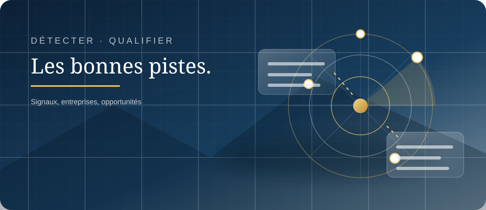

EXPLORER MAJESTIOS · RUBRIQUE
Développement commercial
Transformer les informations utiles en pistes commerciales concrètes et priorisées.

Des pistes aux actions
Repérez les informations utiles, définissez vos priorités et organisez votre suivi commercial.